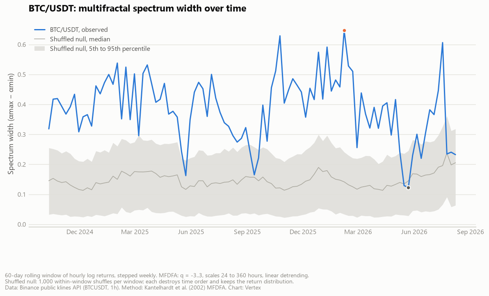

A single roughness number hides the question that actually matters.
A price path can be rough the same way at every scale, or rough in bursts that come and go. A single roughness number cannot tell the two apart. A curve of them can, though what the curve measures is scaling, not direction.
The first post in this series set out the standard this team applies when constructing a signal, and how an idea moves from proposal to alpha. One candidate went through that standard: a measure of how a price path is rough, never traded on its own.
Photo: Sherwin John Carlquist, CC BY 4.0, cropped
{kind=link}
Asking the Roughness Question More Than Once
The standard tool for describing how rough a time series is has been around since the 1950s. H.E. Hurst, working on the hydrology of the Nile, found in 1951 that river flows and other natural records had long memory: their range grew with the length of the record faster than independent draws would allow, as Graves, Gramacy, Watkins and Franzke (2017) recount. That behavior collapses into one number, the Hurst exponent, between zero and one.
Seventeen years later, Benoit Mandelbrot and John van Ness showed that fractional Brownian motion reproduces Hurst's finding, and that model gives the exponent its modern definition. Under that model, an exponent above one half means persistent increments: a rise tends to be followed by another rise. Below one half, increments are anti-persistent, and a rise tends to be followed by a fall. At one half, increments are uncorrelated, as in a plain random walk. Real prices are not fractional Brownian motion, and neither property on its own establishes that returns are predictable.
One number is convenient, and it is also a compression. Real return series do not always scale the same way at every size of fluctuation. The quiet stretches and the violent ones can behave as though two different processes are layered on top of each other, one gentle and one wild. A single exponent averages that difference away. Measuring it at more than one magnitude of fluctuation, and reading off the whole curve instead of one point, is the more demanding question, and a more informative one.
The Method: A Curve Instead of a Point
The tool for that more demanding question is multifractal detrended fluctuation analysis, introduced by Kantelhardt, Zschiegner, Koscielny-Bunde, Havlin, Bunde and Stanley in 2002. It generalizes detrended fluctuation analysis, the method Peng, Buldyrev, Havlin, Simons, Stanley and Goldberger introduced in 1994 to find long-range structure in DNA sequences.
The mechanics: build a profile by cumulatively summing the demeaned return series, then split that profile into non-overlapping segments of length s, working from both ends of the sample. Locally detrend each segment with a simple linear fit and average the squared residual to get that segment's local fluctuation, F²(s,v). Raise those local fluctuations to the power q/2, average across all segments, and take the 1/q power:
Do that across a range of segment lengths s, and F_q(s) scales as a power law in s. The exponent of that power law is the generalized Hurst exponent h(q). Large positive q weights the calculation toward the segments with the biggest fluctuations. Large negative q weights it toward the calmest ones. A series is monofractal when h(q) is flat across q: the same roughness governs the calm and the wild parts alike. It is multifractal when h(q) varies with q: small and large fluctuations of the same series scale differently.
From h(q), the singularity spectrum follows, a standard transform in this literature:
The spectrum's width, the distance between its largest and smallest α, is a single number that nonetheless describes a whole curve. It estimates how heterogeneous the scaling is under the chosen MFDFA specification: the range of q, the range of segment scales and the order of the local detrending. A wide spectrum says small and large fluctuations scale very differently under that specification. A narrow one says they scale about the same. Width alone carries no direction, and it does not say where the heterogeneity comes from.
In plain terms: an average steepness cannot say whether a hiking trail is a gentle, uniform incline or a flat approach followed by a brutal scramble. The spectrum width is the difference between those two trails, made quantitative. It still says nothing about which way the trail leads.
From Measurement to Signal
The width is computed per asset over a rolling window of that asset's own returns. The window length is a mechanism choice, not a free parameter. It has to be long enough for the scaling estimate to settle rather than sample noise, and short enough to respond when the scaling itself shifts. The two demands pull in opposite directions. The window sits at whatever balance that tension allows.
The construction uses width's own cross-sectional rank as the score directly, wide end long, narrow end short. That follows from the standard applied to every candidate at this stage. It asks first whether the raw measurement's own rank predicts what happens next, not whether it improves something else. Ranking width directly is the simplest construction that poses exactly that question. That makes return predictability its own hypothesis, tested separately: that the wide end of the cross-section outperforms the narrow end. It is not a claim that any individual asset is trending, and a wide spectrum is not read as evidence of one.
Turning per-asset scores into a position starts with a cross-sectional rank rather than a fixed threshold, computed after clipping the most extreme readings. Ranking beats a hard cutoff: it keeps the whole distribution's information instead of a binary call. The cost is a small tilt for assets in the ambiguous middle. Each tilt is then scaled toward a target volatility, so no single quiet or violent mover dominates the risk budget. It is split between long and short legs by a deliberate allocation, capped per asset, and zeroed when negligible. The resulting weights are smoothed against the prior period's and held unless the move clears a minimum threshold. They are then scaled again at the portfolio level toward an overall volatility target. Re-evaluation runs on a fixed schedule rather than continuously. The underlying estimate is itself a rolling-window statistic that only shifts meaningfully across many observations, and trading it faster than it can change would mean trading its noise.
Width could have gated a separately built trend measure instead of being ranked directly. It was not: the rank check is what the standard asks for at this stage. Ranking rather than thresholding was chosen to preserve the full cross-section rather than force every asset into one of two buckets. Smoothing and a minimum-move threshold trade slower reaction to a genuine shift in the estimate for lower turnover, a deliberate cost given how noisy the underlying estimate can be from one re-evaluation to the next. The same sample-to-sample variance in the width estimate feeds directly into the rank that decides long from short, mattering most for assets closest to the middle of the cross-section.
Being Real Is Not the Same as Being a Strategy
A signal built this way was checked the same way as every other factor in its cohort. The rule was simple: strip out any parameter search, use only default settings, and test whether the raw measurement's cross-sectional rank predicted next-period returns, broken out year by year rather than pooled into a single average. That rule throws away an optimizer's best attempt on purpose, trading a flattering average for a stricter test. A relationship that appears only once the years are averaged together, and flips or disappears within some of them individually, is not treated as real. One that holds its sign across most of the years tested is, and is carried into further construction.
That is a check on whether a measurement is real. It is a separate and later question from whether that measurement earns a place as an alpha, and both get asked under the same standard, in that order. A candidate can pass the first test and still fail the second: realness earns no guaranteed place on its own.
This one was never run on its own. It was carried forward, alongside several other signals, into a broader model that combined multiple factors into one portfolio view through a statistical weighting step. That broader model was evaluated the same way as every other candidate, against the same standard. It was not deployed either.
Reproducing the Method on Public Data
The chart below computes spectrum width on BTC/USDT hourly closes, pulled from Binance's public klines API (no key required), over rolling 60-day windows stepped weekly across the past two years. The specification is moment orders q from −3 to 3, segment scales from 24 to 360 hours, and linear detrending. Those choices and the window length were made independently for this illustration and do not disclose any internal configuration.

MFDFA spectrum width, BTC/USDT hourly, rolling 60-day windows, against a 1,000-shuffle null per window. Data: Binance. Chart: Vertex.
The width moves. It is not a flat line, which would say the market's scaling behavior never changes. The benchmark it has to beat comes from the method's original paper: shuffle the returns inside a window and recompute. Shuffling destroys time order and leaves the distribution of returns untouched, so a shuffled series keeps whatever width fat tails and finite-sample estimation noise produce on their own. Each window here gets 1,000 shuffles, which form that window's own null distribution. The gray band in the chart is its 5th to 95th percentile.
Observed width sits above the 95th percentile of its own null in 84 of the 96 windows, above the 99th in 77, and above all 1,000 shuffles in 64. That last count is the resolution limit of an empirical p-value at this many shuffles. The median window sits 3.8 standard deviations above its null mean. Twelve windows do not clear the 95th percentile, and seven of them fall between May and August 2026, where observed width drops back inside the band. Consecutive windows share about 88 percent of their data, so these are not 96 independent tests, and they are not pooled into one p-value.
What the comparison supports is narrow. In most windows, observed width exceeds the shuffled benchmark, so the time ordering of returns contributes to it. That ordering can be volatility clustering or nonstationarity as easily as anything tradable. Width is not additive either, so the gap between the blue line and the band is not the share of width due to temporal dependence.
What This Does Not Establish
A wide spectrum is an estimate of heterogeneous scaling under one MFDFA specification. Several things besides temporal dependence can widen it: heavy tails, nonstationarity within the window, finite-sample bias, and the choice of moment orders, scale range and detrending order. It does not reveal direction, and it does not, on its own, show that anything is profitable to trade. Regime structure, trend persistence and expected-return predictability are three separate hypotheses, and each needs its own test.
Di Matteo, Aste and Dacorogna (2005) used generalized scaling exponents to characterize currencies, equity indices and fixed-income markets by their stage of development. Establishing that a market scales heterogeneously is a different claim from establishing that anyone can trade that heterogeneity at a profit after costs.
Spectrum width estimates on a few thousand data points, at the more extreme moment orders, carry real sample-to-sample variance. That variance is a known property of the method on short samples, part of why a width estimate belongs alongside other evidence rather than standing on its own.
None of this addresses what happens when a wide-spectrum factor is combined with other signals into a single portfolio. That is a separate question, decided by different criteria.
Where It Stands
The width measure was constructed, evaluated on the same terms as every other candidate against that standard, and never traded on its own. It was later folded into a larger model, alongside several other factors, and that larger model was not deployed either. Both followed from the same standard, carried through to a considered decision not to deploy.
What Generalizes From This
A candidate factor's predictive power is not averaged across years and left there. The check is broken out year by year, using only the version with no parameter search behind it, before any optimizer approaches it.
A quantity can be real, well grounded in decades of published work, and still say nothing on its own about whether it belongs in a portfolio. Those are different questions, asked in that order, with a willingness to answer the second one no. That ordering is the actual discipline.
Sources
- Graves, T., Gramacy, R., Watkins, N. and Franzke, C. (2017). "A Brief History of Long Memory: Hurst, Mandelbrot and the Road to ARFIMA, 1951–1980." Entropy 19(9), 437. Link
- Kantelhardt, J.W., Zschiegner, S.A., Koscielny-Bunde, E., Havlin, S., Bunde, A. and Stanley, H.E. (2002). "Multifractal Detrended Fluctuation Analysis of Nonstationary Time Series." Physica A 316(1-4), 87–114. Link
- Peng, C.K., Buldyrev, S.V., Havlin, S., Simons, M., Stanley, H.E. and Goldberger, A.L. (1994). "Mosaic Organization of DNA Nucleotides." Physical Review E 49(2), 1685–1689. Link
- Binance. "Market Data Endpoints: Kline/Candlestick Data" — public Spot API documentation. Link
- Di Matteo, T., Aste, T. and Dacorogna, M.M. (2005). "Long-Term Memories of Developed and Emerging Markets: Using the Scaling Analysis to Characterize Their Stage of Development." Journal of Banking & Finance 29(4), 827–851. Preprint: arXiv:cond-mat/0302434. Link